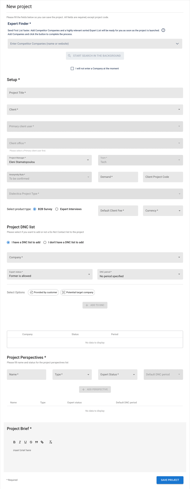
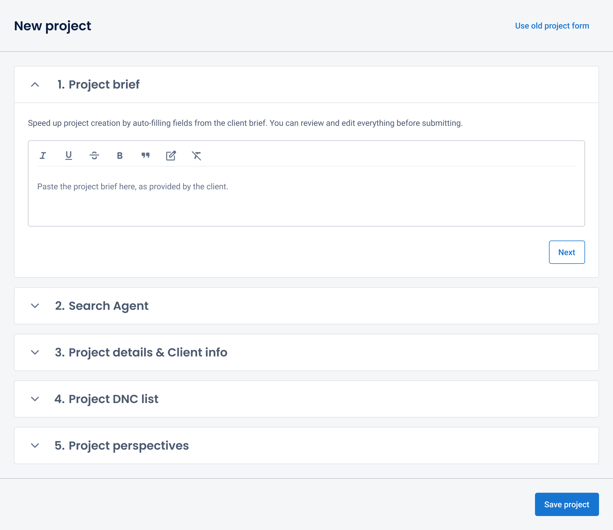
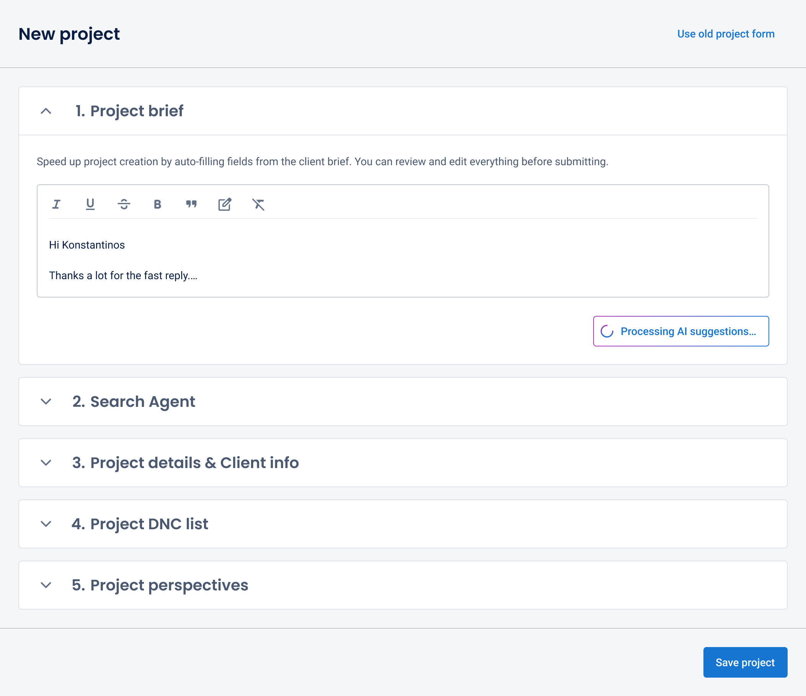
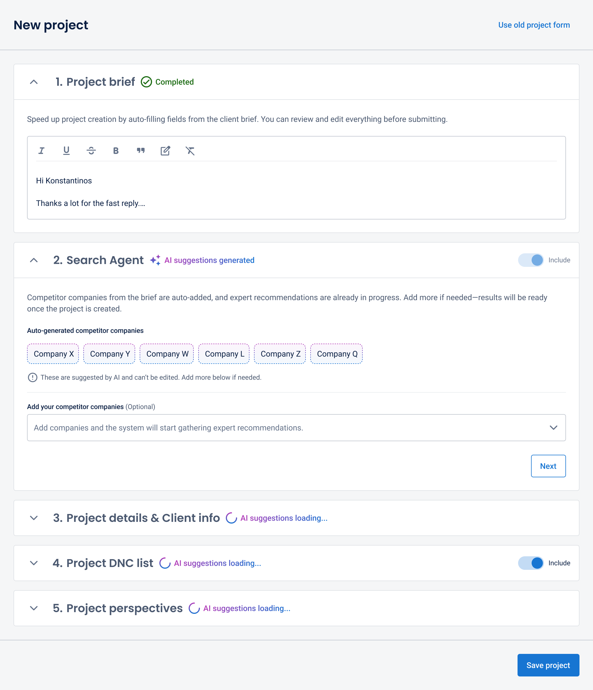
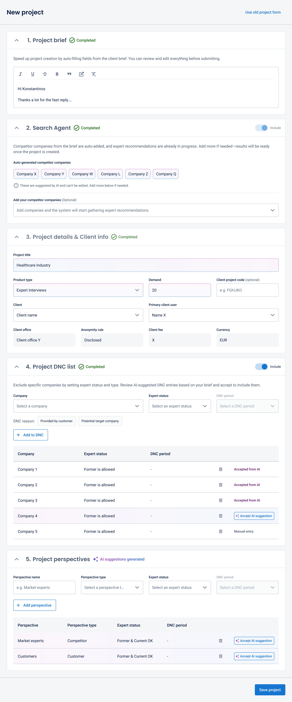
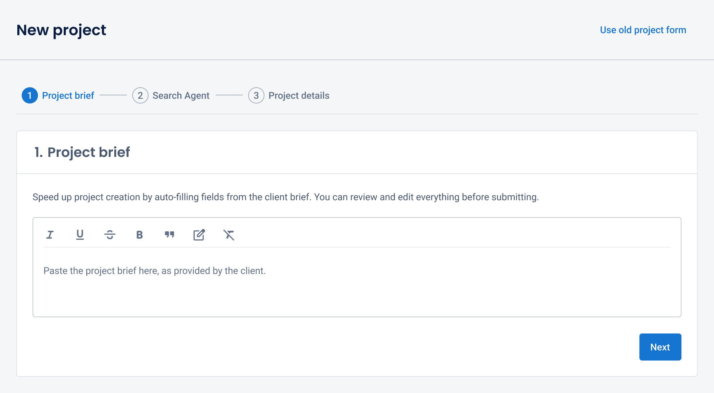
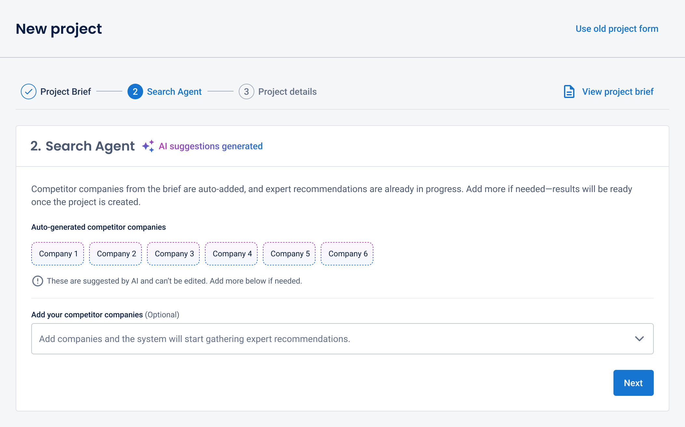
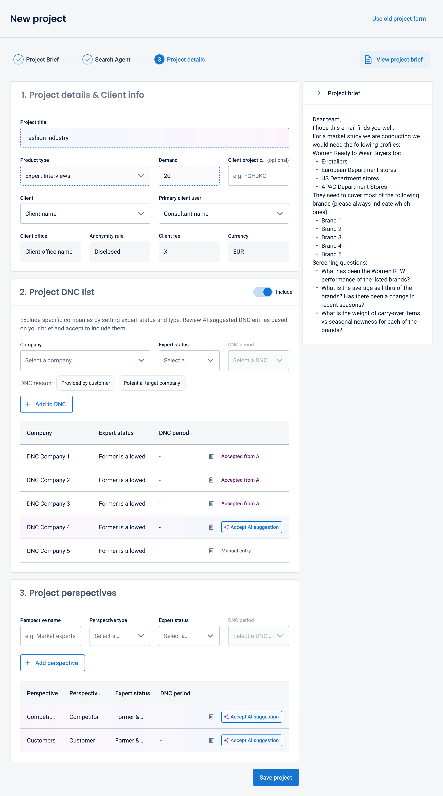

Case Study 01
Reducing Setup Time by 20% with AI-Assisted Project Setup
The Project Builder is used by ~700+ Client Service team members to kick off every client engagement at Dialectica—powering expert matching, project planning, and downstream automation. When I inherited it, it was a manual form averaging 7m 35s per submission, creating delays across the entire workflow. I redesigned it into an AI-assisted system, transforming it from a bottleneck into the foundation for automation.
How Project Builder Fits the Workflow
Dialectica is a B2B information services firm connecting consulting and private equity clients with industry experts worldwide. The Client Service team (~700+ members) runs projects end to end: project creation → expert identification → outreach → screening → client presentation → final interaction. The Project Builder sits at Step 1 — meaning any friction here delays everything downstream.
- Architected the redesign from problem framing through shipping — defined the information architecture, AI interaction patterns, and validation logic
- Led senior stakeholder reviews, including a Managing Director sign-off, to secure the information architecture and AI-first direction
- Standardized new AI-specific components (prefill states, locked fields, loading patterns) adopted into the design system for use across Dialectica products
- 1 Product Manager
- 1 Front-End Engineer
- 1 Back-End Engineer
- 1 Software Engineer in Test
- 1 Data Scientist
- Efficiency: Minimise time-to-submission and accelerate project kickoffs
- Accuracy: Use AI to enhance scoping precision and input quality
- Velocity: Optimise the end-to-end workflow to reduce total delivery lead time
- Efficiency: 20% reduction in form completion time within the first 30 days
- Velocity: Faster project kickoffs aiming at shorter client delivery times, boosting competitiveness
- Data Quality: Improved data accuracy, enabling AI-driven expert matching
- Strategic Growth: Transitioned to structured data — a key milestone in the AI roadmap

When starting a new project, team members had to manually complete every field — client details, project info, DNC (Do Not Contact companies) list, perspectives — while cross-referencing the client brief in Gmail. The average submission took 7m 35s. For Project Managers running back-to-back client launches, this meant repeated context-switching between Gmail and the form — a frustrating start to every engagement. Inputs were inconsistent, and the unstructured data format blocked the company's ability to build AI-driven expert matching downstream.
- Admin-heavy — too many manual inputs with no pre-population
- Error-prone — lack of structured, entity-aware data led to high inconsistency across submissions
- Automation-blocking — the form output couldn't feed downstream AI systems
I benchmarked completion times across 50 submissions and shadowed 5 Project Managers during project setup to map the core friction points.
Once AI analysis is triggered, users can no longer edit or reprocess the brief, neither re-trigger the AI analysis.
Technical & Product Constraints
- Mixed completion modes — some fields AI-populated, others manual; timing of AI output was initially uncertain
- SearchAgent latency — this section needed to be prioritised in the form (as users must trigger the search) to allow more back-end processing time and ensure expert results are ready upon project creation
- Additive-only competitor suggestions — AI suggests competitor companies (starting with competitors, later expanding to customers). Users can add more but cannot remove them
- No existing AI components — new design system patterns had to be built in parallel with the product work
Iteration 1 — Sequential Five-Step Wizard
Milestone: Review with Product Manager, UX & the Managing Director
AI-prefilled steps revealed progressively using a wizard pattern.




Progressive disclosure added clicks without enough payoff — users lacked visibility into what the AI was doing and needed to stay productive while it ran.
Iteration 2 — Three-Step Flow with Persistent Brief
Milestone: Review with Product Manager, UX & the Managing Director
I streamlined the flow to three steps and introduced a persistent brief button for on-demand context. Stakeholder feedback validated that keeping the brief visible alongside the form better supports quick referencing during input.



At this point we confirmed the AI takes ~15 seconds to complete — and that all fields would populate at once, not progressively as initially assumed. This shaped the final interaction model: users needed to stay productive during that window.
Following the Managing Director review, we converged on a split-screen layout: the client brief stays locked on the left as permanent context. On the right, the form is organized into Project details & client info → Project DNC list → Project perspectives → SearchAgent. When the user clicks 'Analyse Brief,' the first two sections unlock for manual input immediately. Once AI processing completes (~15s), the remaining sections populate with AI suggestions marked by a blue/purple tint and 'AI' badge. Users review, edit, and submit — triggering downstream automation for tasks, expert search, and sourcing.
We moved the SearchAgent section down in the form after deciding to remove the user-triggered action. The backend request now runs automatically once AI analysis is complete (as users cannot remove AI-generated companies). We also decided to hold off on populating in this release the DNC companies and the perspectives — we wanted to gather user feedback on AI output quality first before proceeding with sensitive data (DNC) and before doing deeper exploration on perspectives pre-population, including screening questions for each one.
AI analysis in progress — users can begin filling manual fields while the AI processes the brief (~15s)
Key Design Decisions
-
1Persistent brief panel Core Innovation
The client brief stays visible as a fixed left panel so Project Managers always have full context while reviewing AI outputs. I chose a persistent panel over a collapsible brief (tested in Iteration 2) because users referenced the brief 3–4 times during form completion. Given that this form is used only on desktop, responsive design for smaller viewports was not a requirement.
-
2Pattern Consistency
Standardised the display, editing, and confirmation logic for all AI suggestions to ensure a predictable user experience. AI-filled fields use a blue/purple tint and badge to clearly distinguish system-generated content. This pattern — along with locked fields — was standardized in Dialectica's Design System for AI-assisted inputs.
-
3Compliance gate Quality Control
Compliance requirements surface as a conditional gate when the project type requires legal review — requiring explicit user validation of DNC lists before the project can be saved. This stops automation from running on regulated projects without human sign-off.
The Project Builder shifted from a bottleneck to the trigger for automation across the workflow.
Results at a Glance
20% reduction in average completion time within 30 days of launch (from 7m 35s to ~6m 04s across 700+ daily users). This 91-second saving per submission translates to ~350–500 hours saved per month — accelerating the entire workflow from expert identification to client delivery.
Eliminated the setup bottleneck delaying expert identification — accelerating time to first expert list
Structured, entity-aware data replaced free-text inputs, unblocking AI-driven expert matching
First AI-assisted workflow shipped at Dialectica — interaction patterns became the org-wide standard
The new flow feels like having an assistant pre-read the brief for me.
— Project Manager Feedback, post-launch- Reduced training time
- Increased adoption
- Improved internal satisfaction
- Project setup became a trigger for automation, not a bottleneck
- The redesign unlocked AI roadmap items that were blocked
- The AI prefill pattern, locked-field states, and blue-tint badge system I designed were adopted into Dialectica's design system and are now used across multiple product workflows
The single-commit constraint initially felt like a limitation, but it forced a layout decision — persistent brief context — that became the foundation of user trust in the AI output. Constraints didn't just shape the architecture; they produced a better product than an unconstrained design would have.
Users didn't need explanations of how the AI worked. They needed to see their own brief next to the AI's suggestions and judge for themselves. This changed how I think about AI trust patterns — show the source, not the process.